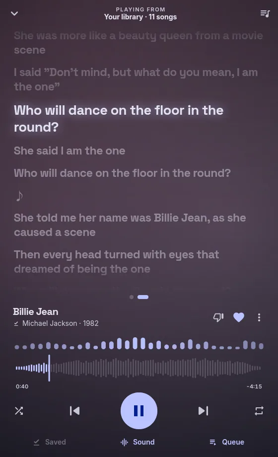
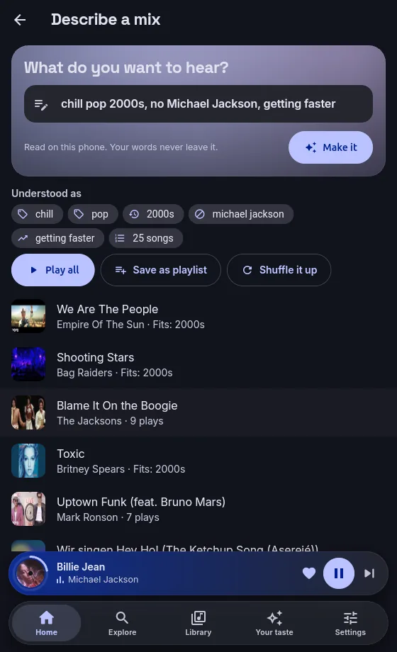
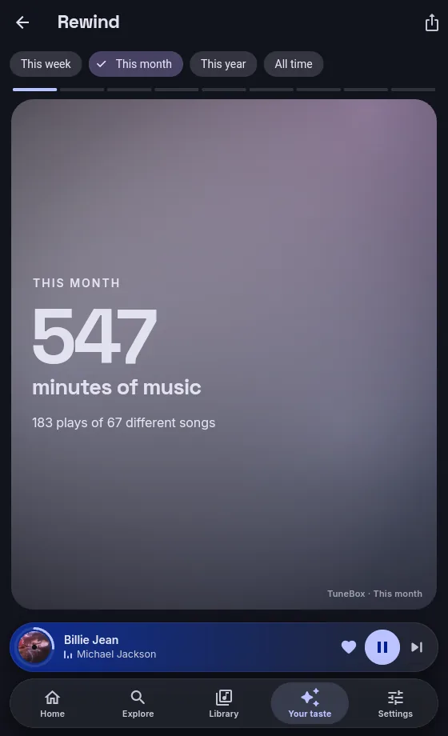
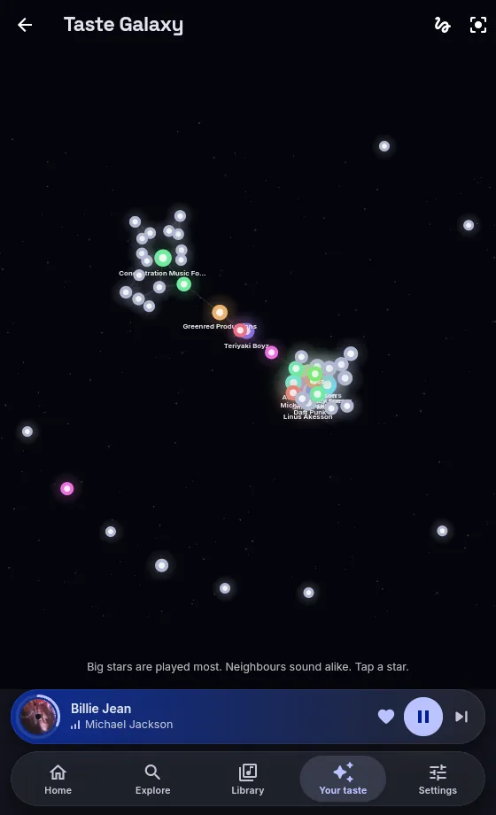
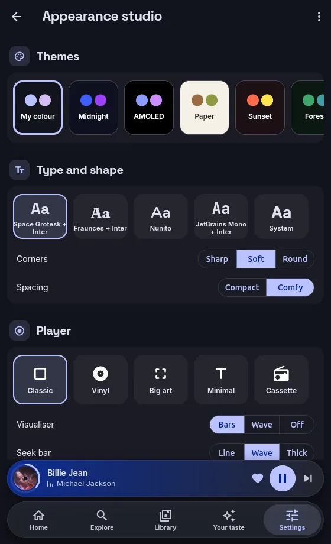

New
1.0.1 · 8 Nov 2026
1.0.1 · 8 Nov 2026
Sync fix
- Fixed: Synced devices only synced one profile. Now every profile syncs into the same profile on your other device, and names match.
- Existing pairings keep working; no need to pair again.
Stream from YouTube, play your own files, download for offline. Lyrics that follow along, a mix from one sentence, and an AI that learns what you like without ever leaving your phone. No account, no ads, no tracking.
Without the account, the subscription or the company reading over your shoulder.
Synced, karaoke-style lyrics. The line being sung lights up; tap any line to jump there. Saved for offline.
"Rainy Sunday 2000s rock, no Linkin Park, getting faster" becomes a playlist. Read on your phone, never in a cloud.
Crossfade, gapless, loudness levelling, an equaliser that remembers each pair of headphones, and a sleep timer that fades out.
Plays, skips, likes and a swipe-to-rate round teach an on-device model. See exactly what it thinks of you, and change its mind.
Your listening as stories any time, your artists as a star map, and one fair queue from two tastes.
Vinyl and cassette players, themes, fonts, your own tabs and Home layout. Share your look as a code.
Pair your phone and computer once; every profile stays in step by itself on your Wi-Fi. Encrypted, no server.
Stream YouTube Music or point TuneBox at a folder. Downloads for offline, Wi-Fi only if you want.
Each listener gets their own library, likes and taste. 85 languages, text size, high contrast and Reduce motion built in.
Swipe through. Every screen is from the real app.





Every update installs over the old one and keeps your library and taste.
Morphing play button, seek bubble, undo everywhere, loading placeholders and keyboard shortcuts on big screens.
A searchable language picker, an iOS-style feel (turn it off with Reduce motion), instant search, and a lighter footprint on phones with little memory.
Latest version: v1.0.1. Free, forever, MIT licensed. downloads so far, counted by GitHub — no tracking.
Android 7 or newer. One universal APK.
Download APK Open it on the phone and allow installing from that app once. Signed with a real release key; after that the app updates itself.x86_64. Installs into your home folder, no root.
Download .tar.gz Extract, run./install.sh. Needs libmpv (sudo apt install libmpv2).iOS 15+. Unsigned build you sign with your own Apple ID.
Download .ipa Install with SideStore or AltStore; a free Apple ID needs a refresh every 7 days (they do it for you).Android's Play Protect warns about any app it hasn't seen before — that is "unknown", not "malicious". The app asks for very little: internet, notifications, playback service and (only if you import music) audio files. No contacts, location, camera or SMS. The code is public on GitHub.
TuneBox is an independent, unofficial project and is not affiliated with or endorsed by YouTube or Google. It is a personal-use player; please respect the terms of the services you use.
No. It is free and open source under the MIT licence, with no ads, no accounts and no analytics.
Open an issue on GitHub. Say which device and version (Settings → About) and what you tapped.
Free and open source, on Android, Linux and iPhone.